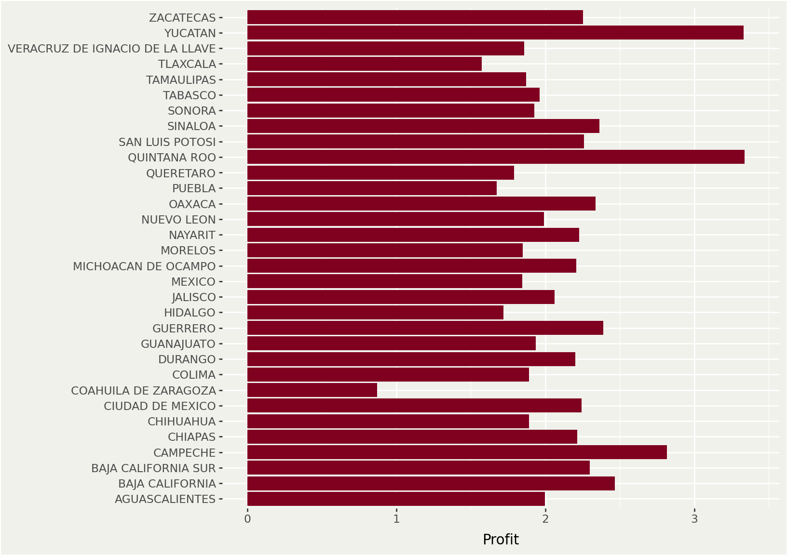
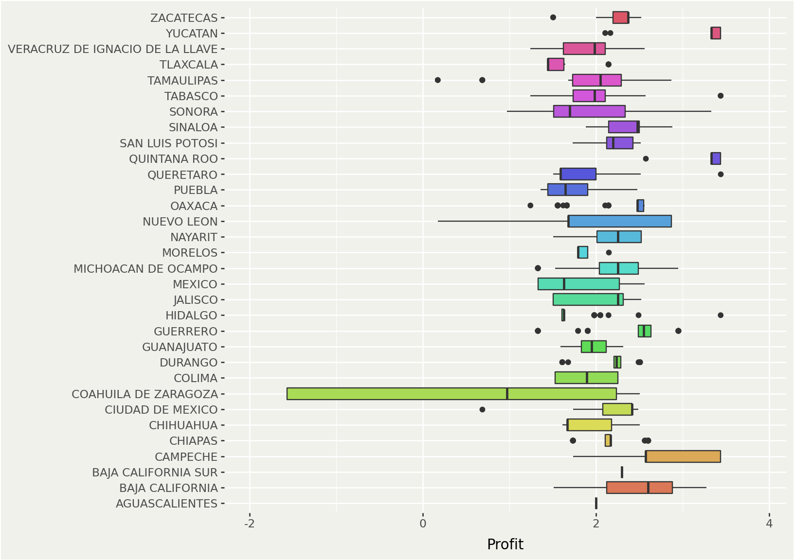

| state | gasoline_cost | sale_price | profit | profit% |
|---|---|---|---|---|
| QUINTANA ROO | $21.46 | $24.80 | $3.34 | 15.55% |
| YUCATAN | $21.46 | $24.79 | $3.33 | 15.52% |
| NAYARIT | $22.54 | $24.76 | $2.23 | 9.90% |
| GUERRERO | $22.37 | $24.76 | $2.39 | 10.67% |
| SINALOA | $22.36 | $24.72 | $2.36 | 10.59% |
Gasoline Prices in Mexico
Fuel Price Fluctuations, A Constant Concern
Jesus L. Monroy
Economist & Data Scientist
Economist & Data Scientist
Feb, 2025
Overview
Current Situation
Rising Prices
Despite government efforts to stabilize fuel costs, gasoline prices in Mexico have been on the rise. Some estimates suggest prices could reach MX$30 per liter during 2025.
Regional Variations
Gasoline prices vary significantly across different states in Mexico. Quintana Roo has the highest average price for regular gasoline, while Veracruz has the lowest.
Government Intervention
The government has implemented measures like a price cap of MX$24 per liter for regular gasoline and has been working to stabilize fuel prices. However, these efforts have faced challenges.
Factors Affecting Prices
Global Oil Prices
International oil prices play a significant role in determining gasoline prices in Mexico.
Government Policies
Taxes, subsidies, and regulations implemented by the Mexican government influence fuel prices.
Economic Conditions
Inflation, exchange rates, and other economic factors can impact gasoline prices.
Challenges and Concerns
Impact on Low-Income Families
Rising gasoline prices put a strain on low-income households, affecting their daily expenses and overall economic well-being.
Economic Impact
Increased fuel costs can have a ripple effect across various sectors of the economy, potentially leading to inflation and affecting businesses.
Government Promises
The government’s promises to keep gasoline prices low have been met with skepticism, as prices continue to climb.
Top 05 States with highest gasoline prices
The following table presents a snapshot of the States with highest gasoline prices in Mexico.
Top 05 States with lowest gasoline prices
The following table presents a snapshot of the States with lowest gasoline prices in Mexico.
| state | gasoline_cost | sale_price | profit | profit% |
|---|---|---|---|---|
| TAMAULIPAS | $21.22 | $23.10 | $1.87 | 8.79% |
| COAHUILA DE ZARAGOZA | $22.25 | $23.12 | $0.87 | 4.01% |
| CHIHUAHUA | $21.47 | $23.36 | $1.89 | 8.90% |
| NUEVO LEON | $21.41 | $23.40 | $1.99 | 9.32% |
| VERACRUZ DE IGNACIO DE LA LLAVE | $21.59 | $23.44 | $1.86 | 8.62% |
Top 05 Municipalities with highest gasoline prices
The following table presents a snapshot of the Municipalities with highest gasoline prices in Mexico.
| mun_state | gasoline_cost | sale_price | profit | profit% |
|---|---|---|---|---|
| NUEVA ITALIA, MICHOACAN DE OCAMPO | $22.52 | $25.17 | $2.65 | 11.78% |
| ZIRACUARETIRO, MICHOACAN DE OCAMPO | $22.52 | $25.17 | $2.65 | 11.78% |
| GABRIEL ZAMORA, MICHOACAN DE OCAMPO | $22.52 | $25.17 | $2.65 | 11.78% |
| HUIRAMBA, MICHOACAN DE OCAMPO | $22.52 | $25.17 | $2.65 | 11.78% |
| NAHUATZEN, MICHOACAN DE OCAMPO | $22.52 | $25.17 | $2.65 | 11.78% |
Top 05 Municipalities with lowest gasoline prices
The following table presents a snapshot of the Municipalities with lowest gasoline prices in Mexico.
| mun_state | gasoline_cost | sale_price | profit | profit% |
|---|---|---|---|---|
| ANAHUAC, NUEVO LEON | $20.57 | $20.74 | $0.17 | 0.84% |
| CD. GUERRERO, TAMAULIPAS | $20.57 | $20.74 | $0.17 | 0.84% |
| LAMPAZOS DE NARANJO, NUEVO LEON | $20.57 | $20.74 | $0.17 | 0.84% |
| ALLENDE, COAHUILA DE ZARAGOZA | $22.59 | $21.02 | $-1.57 | -6.94% |
| MORELOS, COAHUILA DE ZARAGOZA | $22.59 | $21.02 | $-1.57 | -6.94% |
Average Gasoline Price by State
The following chart shows average gasoline prices by State in Mexico.

Profit by State
The following chart shows average profit by selling gasoline by State in Mexico.

Dispersion of Gasoline Prices
The following chart shows the dispersion of gasoline prices by State in Mexico.

Dispersion of Profits
The following chart shows the dispersion of profit by selling gasoline by State in Mexico.

Geographical Distribution
Conclusions
In most states, filling a 40-liter car tank costs around $1,000 pesos.
While precise price predictions are difficult, it’s reasonable to expect continued volatility in gasoline prices in Mexico during 2025.
The interplay of global oil markets, government policies, and domestic economic conditions will create a dynamic environment. Consumers should be prepared for potential price fluctuations and consider strategies for managing their fuel expenses.
The energy sector, meanwhile, will be closely watched as Mexico navigates the complex challenges of ensuring affordable and accessible fuel for its population.
The future of gasoline prices in Mexico remains uncertain, but one thing is clear: it will continue to be a topic of significant importance for both consumers and policymakers.
Contact
Jesus L. Monroy
Economist & Data Scientist
© 2025